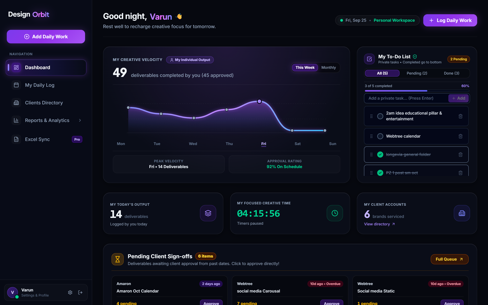
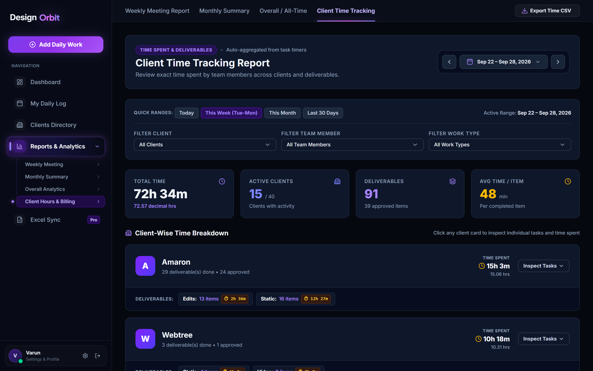
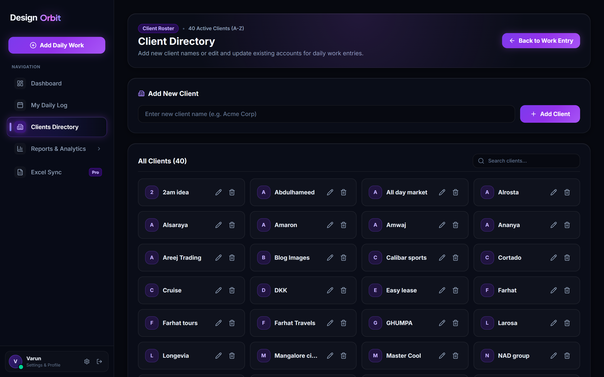
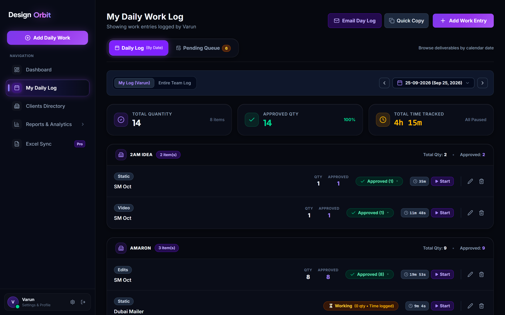
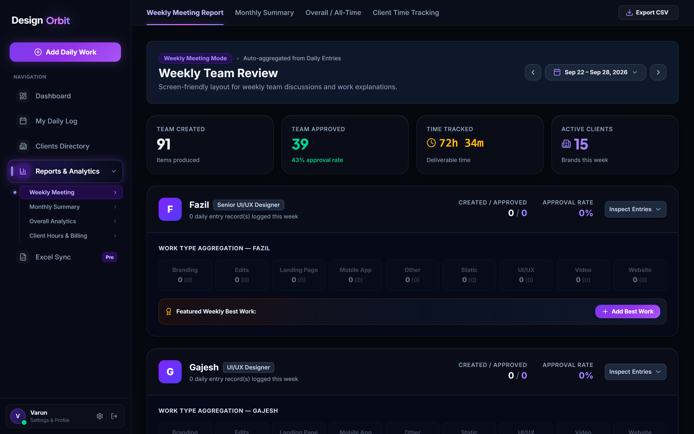

✦ Internal Operations & Team OS
"built to fix spreadsheet chaos" ✎
Design Orbit
A centralized design operations & team management dashboard built to track client deliverables, monitor time allocation, and maximize creative team output.
The Friction
The Challenge
As a design team grows across multiple client accounts, tracking billable hours, project milestones, and individual designer bandwidth quickly becomes fragmented across spreadsheets and chat threads.
Blind Spots in Bandwidth:
Leads couldn't gauge if a designer was overloaded or sitting idle until sprint deadlines were already missed.
Unlogged Billable Leakage:
Scattered WhatsApp feedback loops meant client revision hours weren't tracked against agreed budgets.
Siloed Asset Review:
Creative assets were lost between Figma links, Google Drive folders, and Slack channels.
“We didn’t just need another task list—we needed a real-time single source of truth connecting designer capacity directly with client budgets.”
The Architecture
The Solution
Designed and spearheaded Design Orbit—an internal operations and management suite that connects creative team output directly with client accountability through four unified pillars:
01
Team & Capacity Management
Real-time visibility into designer workload, sprint progress, and task assignments to prevent bottlenecks and burnout.
02
Client Time & Budget Tracking
Granular logging of hours spent per client account, keeping deliverables on budget and simplifying reporting.
03
Deliverable & Output Tracking
End-to-end status of design assets from brief to review, internal quality approval, and final client handoff.
04
Operational Insights
Executive analytics on team velocity, hours utilized, billable ratio, and project completion rates.
Proven Studio Impact
Transforming team operations from reactive chaos into predictable, profitable output.
-40%
Administrative Overhead
Streamlined client reporting and reduced administrative overhead for sprint planning and timeline estimation.
98%
On-Time Milestone Delivery
Improved project delivery timelines through proactive bandwidth balancing and early bottleneck identification.
100%
Budget & ROI Transparency
Provided unambiguous transparency into client ROI, active deliverable burn-rate, and creative team utilization.
Key System Interfaces
Carefully engineered for leadership oversight, commercial accountability, and designer ease of use.



